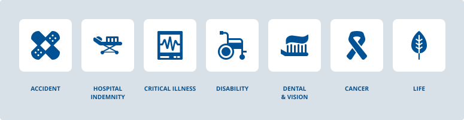

Icons
General Usage Rules
The purpose of an icon is to help a user comprehend information more effectively and efficiently. Icons help make content more visually appealing and can draw attention where needed when used correctly as an accent.
We use Font Awesome for our utility icons. Consider the following usage rules when selecting and implementing icons in your project:
DO
- Choose an icon that supports the content and isn’t a distraction.
- Include a label for the icon where it makes sense to help convey meaning.
- Make sure icons that are links or buttons (i.e. social media icons) are easily tappable. The recommended minimum hit box of the link or button is 40px by 40px.
- Match icon styles throughout a particular application. Keep things visually consistent and clear for the user.
- Choose an icon that is most directly associated to the content you are attaching it to.
DON’T
- Don’t overload a page with icons; this will result in clutter and may decrease their effectiveness.
- Avoid using icons with people or body parts
Product Icon Usage
Product icons are a visual representation of our brand and products. These icons are intended to convey the core meaning of a product in a simple way. Product icons are available in single color and multi-tone versions. Please consider the following rules when using product icons:
DO
- Use the single color version in smaller spaces. Examples include navigation, buttons, and lists
- Use the multi-tone version in instances where they are rendered on a larger scale and thus can be the main focus
DON’T
- Don’t use a product icon in relation to anything other than the product it represents
- Don’t use the multi-tone version of an icon in small spaces. The detail will be lost here.

Creation Rules
There may be times when a team needs to create their own icon when other icons may not be available, or are not appropriate for the content. In those instances, please consider the following stylistic rules when creating icons for your project:
DO
- Design with simplicity in mind.
- Use the standard grid for consistency. Start at the smallest base size for scalability and legibility.
- Build from basic geometric shapes like triangles, rectangles, circles, and squares as often as possible for visual consistency.
- Icons should be just detailed enough to clearly convey meaning. Icons with less realism function better at multiple sizes.
- Include a label for the icon where it makes sense. Icons that aren’t easily understood may need labels to help users accomplish tasks.
- Add complexity to the icon as its physical size increases
DON’T
- Don’t overcomplicate icons - icons should be easily understood at a glance.
- Don’t design for the largest size first - start small and scale up.
- Don’t deviate from the grid.
- Don’t use isometric/angled perspectives.
- Don’t include more than 2 objects per icon
- Don’t include the same object across multiple icons in a set
- Don’t use more than one hue per object
- Don’t use more than 3 colors per icon
- Don’t use shadows or strokes
- Don’t use gradients